文字
背景
行間


SGH活動報告
ＳＧＨ海外研修（シンガポール派遣）事前指導
９月４日（火） 本校にシンガポールからの留学生と東京大学の先生を講師としてお招きして、事前指導を実施しました。
留学生の方にはシンガポールの3つのSpace (Urban Space, Cultural Space,Political Space)というタイトルで、シンガポールの多文化社会、政治、社会事情についてお話を伺いました。「シンガポールには文化背景が異なる人々がいるが、一緒に生活していくことで、距離が縮まっていく。」という日本とはかなり異なった、シンガポール社会についてのお話が印象的でした。
本校生徒はSGH課題研究を発表し、それに対しても質問やコメントをいただきました。留学生の方からは日本人とは異なった視点からコメントをいただき、大変有意義な事前指導になりました。大学の先生からは詳細なコメントをいただき、大変参考になりました。
シンガポールへの出発は来週１２日です。この事前指導を通じて、生徒達はシンガポールに行くのがさらに楽しみになったようです。
 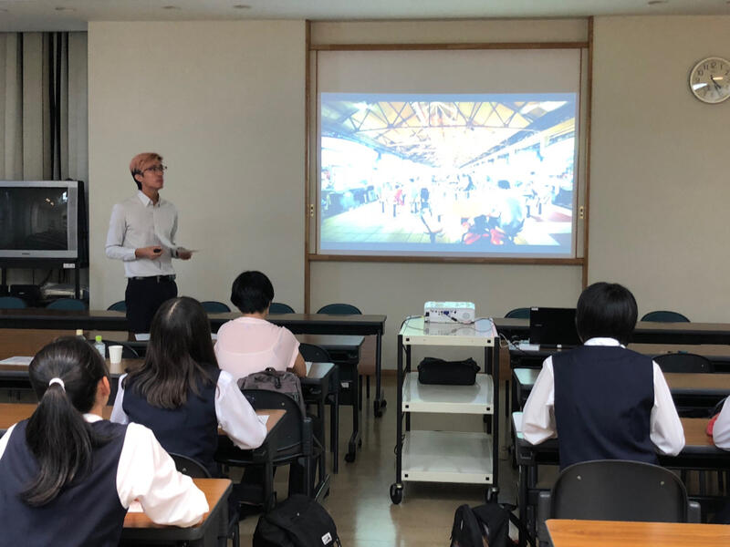
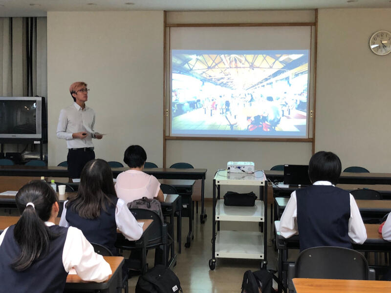

留学生の方にはシンガポールの3つのSpace (Urban Space, Cultural Space,Political Space)というタイトルで、シンガポールの多文化社会、政治、社会事情についてお話を伺いました。「シンガポールには文化背景が異なる人々がいるが、一緒に生活していくことで、距離が縮まっていく。」という日本とはかなり異なった、シンガポール社会についてのお話が印象的でした。
本校生徒はSGH課題研究を発表し、それに対しても質問やコメントをいただきました。留学生の方からは日本人とは異なった視点からコメントをいただき、大変有意義な事前指導になりました。大学の先生からは詳細なコメントをいただき、大変参考になりました。
シンガポールへの出発は来週１２日です。この事前指導を通じて、生徒達はシンガポールに行くのがさらに楽しみになったようです。
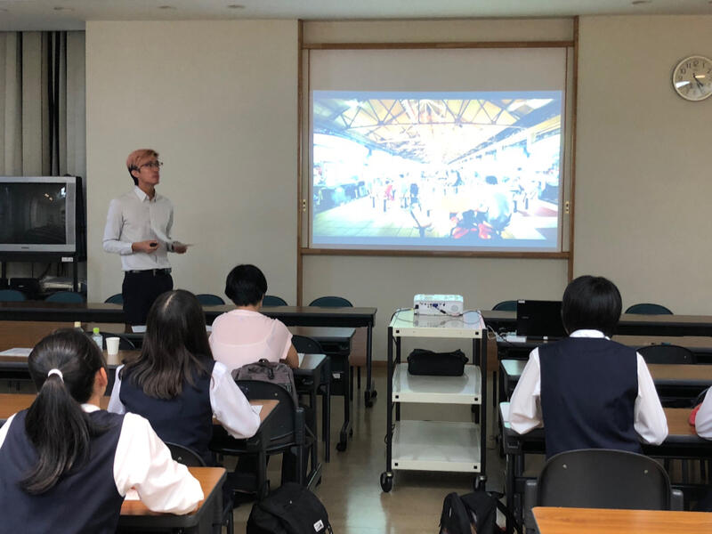 GL探究「１分間スピーチ」
平成30年9月4日（火）6，7限 第１学年普通科において、課題研究テーマを決めるための1分間スピーチ（個人発表）を行いました。千葉大学と東京大学の先生２名に御来校いただきテーマの決め方、研究の方向性や研究方法について助言をいただきました。今後は、テーマについて外国の事例を含めた先行事例やテーマを絞り込んで、研究グループを編成していきます。
 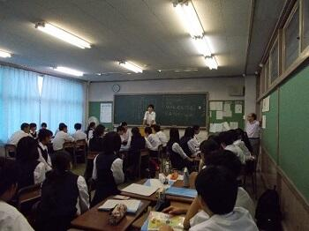
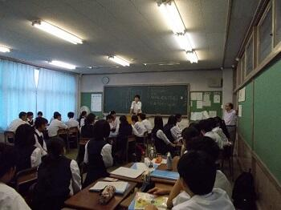
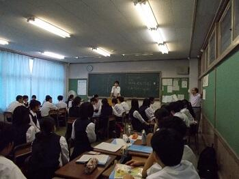 GLアクティブ「醸造文化・地域活性化を学ぼう」
平成３０年８月２２日（水）本校１・２年生１７名が、香取市佐原地区を訪問し、発酵醸造文化を基礎とした地域活性化について考えました。また、ハラール認証を受けた醤油のイスラム圏への輸出の可能性について考えてみました。
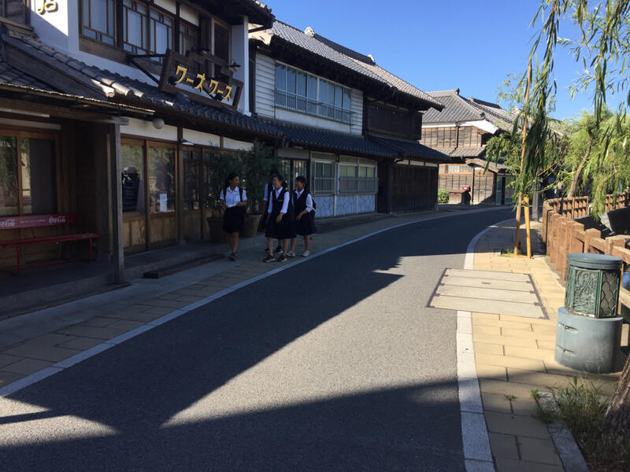
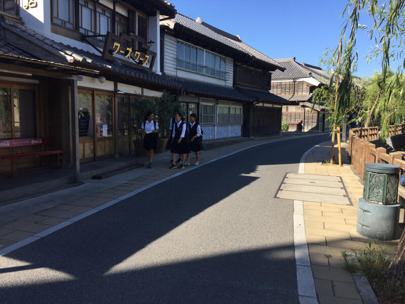
世界高校生水会議「Water is Life 2018」
平成３０年７月２４日（火）～２８日（土）渋谷教育学園渋谷中学高等学校及び渋谷教育学園幕張中学高等学校で行われた世界高校生水会議に本校２年生４名が参加しました。本校生徒は、講演やワークショップ、水に関する化学実験等に参加するとともに、世界１８か国（１０７名）の高校生及び本校以外の日本の高校生２８名と水に関するグローバルな課題について議論するなどの活動を行いました。全て英語でのやりとりでした。
３日目に行われたオーラルプレゼンテーション及びポスタープレゼンテーションでは、本校生徒は、「Team RISKIT」（高橋 玲、鹿嶋爽平、泉 恭太、佐々木いずみ）として、「Preserving the Native Eco-System of the Inba Swamp」というテーマで発表し、印旛沼でナガエツルノゲイトウという外来植物が繁殖し、水質汚染や生態系への悪影響のみならず農業や洪水排水作業に支障をきたしていることを課題として取り上げ、高校生ができる解決へ向けた取組について提案しました。その結果、Stewardship＆Polisy 部門で第３位でした。
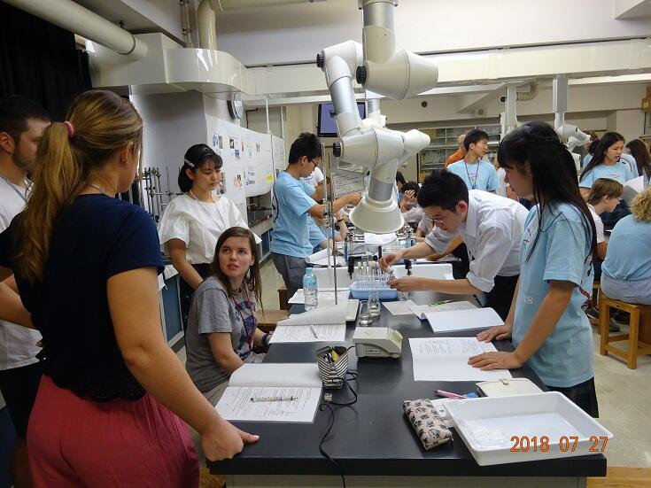
 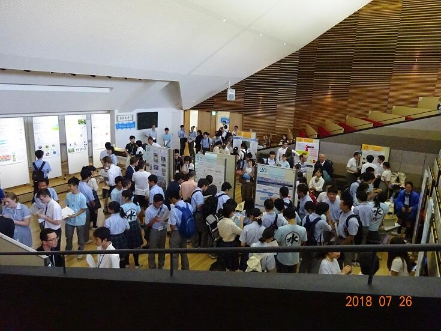
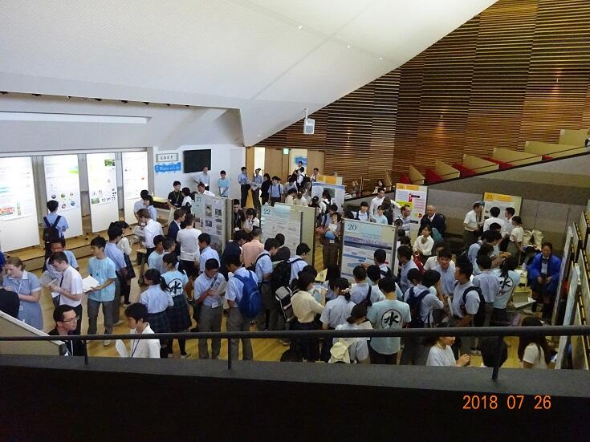

３日目に行われたオーラルプレゼンテーション及びポスタープレゼンテーションでは、本校生徒は、「Team RISKIT」（高橋 玲、鹿嶋爽平、泉 恭太、佐々木いずみ）として、「Preserving the Native Eco-System of the Inba Swamp」というテーマで発表し、印旛沼でナガエツルノゲイトウという外来植物が繁殖し、水質汚染や生態系への悪影響のみならず農業や洪水排水作業に支障をきたしていることを課題として取り上げ、高校生ができる解決へ向けた取組について提案しました。その結果、Stewardship＆Polisy 部門で第３位でした。
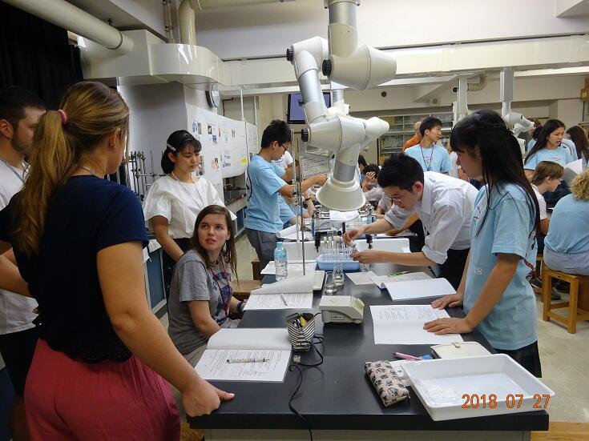
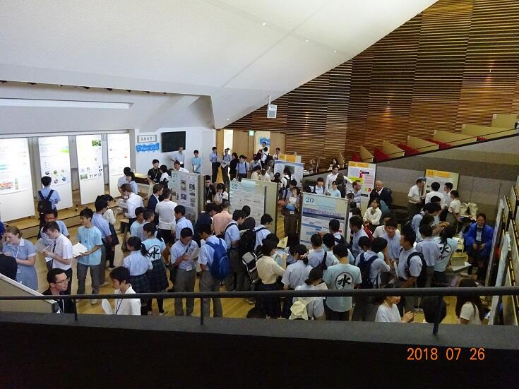 ＧＬアクティブ「浅草・両国・築地・江戸博で調査」
平成３０年８月１０日（金）第１・２学年生徒４７名が、浅草、両国、築地に出向き、外国人観光客に課題研究に係ることについて英語でインタビューを行いました。その後江戸東京博物館に立ち寄り、日本の歴史について調べ、課題解決の材料を収集しました。
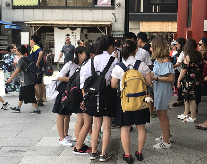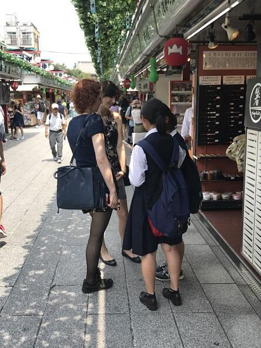
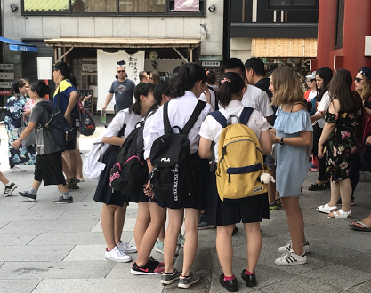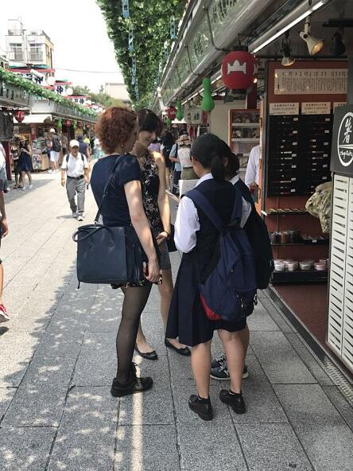
ＧＬアクティブ「高校生によるまちづくりワークショップ」
平成３０年８月１０日(金) ２年生７名が佐倉市役所において「佐倉市総合計画策定のための高校生によるまちづくりワークショップ」に参加しました。「今後の佐倉市のために市役所がすべきこと、市民ができること」というテーマのもと、市内の他の高等学校の生徒とともに付箋にアイデアを書き出し、それらを模造紙に貼り、考えをまとめました。この活動を通じて、生徒は佐倉市の状況を踏まえ、佐倉市をよりよくするための対策について考えることで、課題研究を深めることができました。
 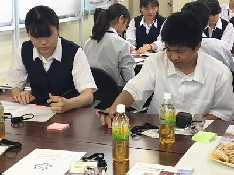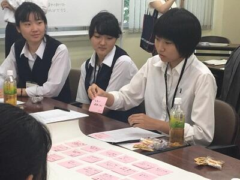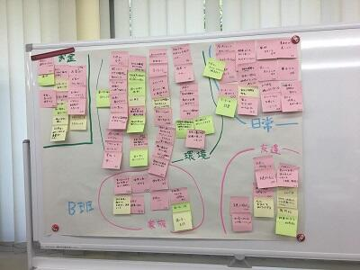
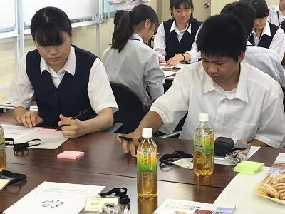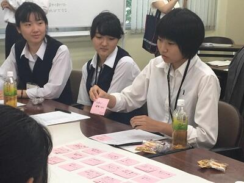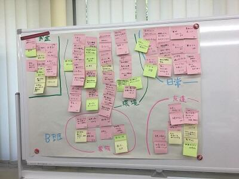
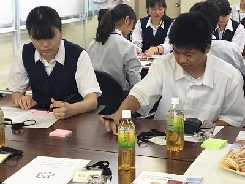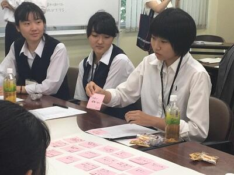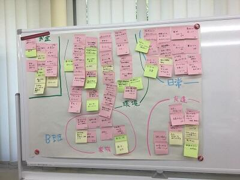 オーストラリア研修・課題研究発表
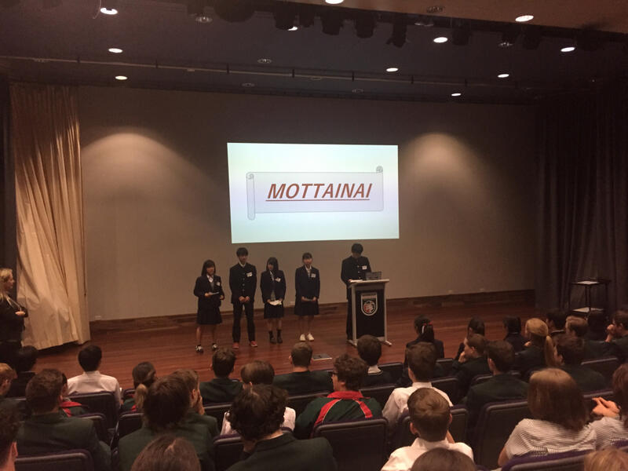平成３０年７月３１日（火）オーストラリア研修に参加している2年生２０名が、ナンボー・クリスチャンカレッジにおいて、１０年生約１００名に対し、課題研究の発表を行いました。「戦争を語り継ぐ」「ラッシュを解消しよう」「もったいない」「日本のゴミ問題」等のテーマでグループごとに発表を行いました。「日本のゴミ問題」については、現地校の生徒の反応がよく、質疑応答もたくさんありました。プレゼンテーションは全体的によくできていました。しかし、予期せぬ質問に対し英語で答えることが十分とは言えず、この機会を通して生徒が自分の課題を自身で捉えることができました。
GLアクティブ「ビジネスプラン研修」
平成３０年７月２０日（金） ２年F組３班の６名が日本政策金融公庫千葉支店において、伝統工芸品に係るビジネスプランを発表しました。コーディネータの先生方から御意見・御指導をいただき、研究内容について再考する部分があることや研究方法等を改善しなくてはならない点があることに気づきました。また、他校生徒のビジネスプランの発表も聞くことができ、課題研究の参考にすることができました。


課題研究「戦争を語り継ぐ」による小学校での特別講義
投稿日時 : 2018/07/12
 探究担当
探究担当
 平成３０年7月11日（水）午後、2学年の課題研究「戦争を語り継ぐ」のグループが佐倉市立間野台小学校で小学6年生を対象に特別講義を行いました。
平成３０年7月11日（水）午後、2学年の課題研究「戦争を語り継ぐ」のグループが佐倉市立間野台小学校で小学6年生を対象に特別講義を行いました。「日本はどのように戦争に参戦するようになったのか」
「当時の国民の暮らしはどのようなものだったのか」
「戦争体験者へのインタビュー調査の結果」
といったテーマで講演をしました。
戦争に関するクイズや当時の装備がどのくらいの重さだったのかを体験させた時には児童も熱心に話を聞いていました。この講義を通して児童の皆さんが戦争や平和について考えるきっかけになることを目指した取組です。
児童の皆さんにアンケート調査も行いました。間野台小学校の先生方、御協力ありがとうございました。
GL探究「研究を深めよう」
 平成３０年７月１１日（水）第２学年普通科において、課題研究を深めるためのグループ協議を行いました。日本政策金融公庫の方２名に御来校いただき研究の方向性や研究方法について相談にのっていただきました。研究グループごとに御助言をいただき、テーマの絞り込みがもっと必要だと気づいたグループもありました。
平成３０年７月１１日（水）第２学年普通科において、課題研究を深めるためのグループ協議を行いました。日本政策金融公庫の方２名に御来校いただき研究の方向性や研究方法について相談にのっていただきました。研究グループごとに御助言をいただき、テーマの絞り込みがもっと必要だと気づいたグループもありました。